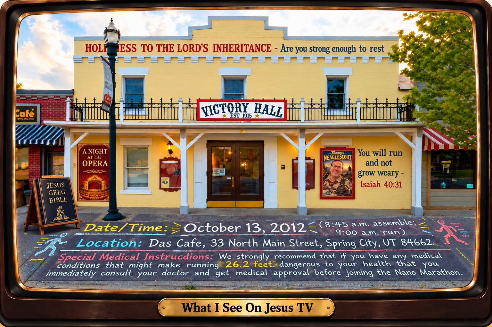

Jesus TV — Standard Frame Reference
This is the original visual reference for the standard What I See On Jesus TV frame. Preserve the television's appearance, shape, plaque, and proportions when creating future framed scenes.

This is the original visual reference for the standard What I See On Jesus TV frame. Preserve the television's appearance, shape, plaque, and proportions when creating future framed scenes.
